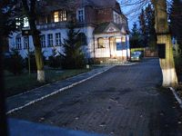
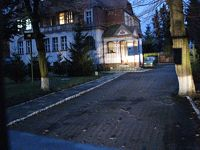

dodano: 05-10-2008
W artykule Jerzego Sarneckiego "Zakonne s³upki graniczne" znajdziemy informacjê o trzech cysterskich s³upkach w Lubawce. Dwa z nich s¹ w Ulanowicach (patrz tutaj) - a gdzie jest trzeci? OdpowiedŸ znajdziemy w artykule Zygmunta Sarneckiego "Krzeszowskie pogranicze" który ukaza³ siê w numerze 4/1987 "Przydro¿nych pomników przesz³oœci": "Znane s¹, zw³aszcza mieszkañcom Ulanowic w Lubawce, dwa s³upki graniczne przy koœciele œw. Krzysztofa oraz obok stra¿nicy w Lubawce".
Równie¿ w "S³owniku Geografii Turystycznej Sudetów tom 8" w opisie has³a Lubawka znajdziemy fragment o cysterskim s³upku: "Natomiast ko³o placówki Stra¿y Granicznej jest przeniesiony tu jeden ze s³upków granicznych z 1727 roku, rozdzielaj¹cych dawne tereny posiad³oœci cystersów z Krzeszowa i jezuitów z Trutnova".
Aktualnie pojêcie "stra¿nicy" b¹dŸ "placówki Stra¿y Granicznej" dotyczyæ bêdzie £u¿yckigo Oddzia³u Stra¿y Granicznej w Lubaniu Placówka Stra¿y Granicznej w Lubawce, ul. Przyjació³ ¯o³nierza 5.
... wystarczy udaæ siê i wykonaæ zdjêcie tego s³upka - czy ktoœ z osób odwiedzaj¹cych tê stronê mo¿e takie zdjêcie wykonaæ i podes³aæ mi e-mailem ?
dodano: 11-11-2008
10 listopada 2008 roku bêd¹c w pobli¿u pojawi³em siê na ulicy Przyjació³ ¯o³nierza w celu stwierdzenia, czy s³upek tam rzeczywiœcie jest. Niestety razem ze mn¹ pojawi³y siê dwa problemy - po pierwsze teren okaza³ siê byæ zamkniêty a po drugie panowa³a ju¿ ciemnoœæ. Gdzieœ tam jednak za bram¹ widzia³em pomalowany na bia³o s³upek - wygl¹da³ mi on na cysterski s³upek graniczny - by³ jednak nazbyt daleko i nie by³em w stanie jednoznacznie stwierdziæ czy to w³aœnie jest to czego szuka³em. Zrobionych kilka zdjêæ ("z rêki" i przy œwietle samochodowych reflektorów, jedno z lamp¹ b³yskow¹ która nie mia³a odpowiedniej mocy przy takiej odleg³oœci). Tym niemniej chyba s³upek tam jest i w dzieñ mo¿na bêdzie wykonaæ zdjêcie ...
 


dodano: 06-12-2008
3 grudnia 2008 roku uda³o mi siê zrobiæ zdjêcie s³upka ko³o budynku SG. Wczeœniej widziany kamieñ rzeczywiœcie jest cysterskim s³upkiem granicznym pomalowanym na bia³o i widaæ go na poni¿szych zdjêciach.


dodano: 06-12-2009
Z ca³¹ pewnoœci¹ s³upka w opisywanym miejscu nie by³o ju¿ 8 wrzeœnia 2009 roku - bo wtedy wykona³em poni¿sze zdjêcia. Z informacji jakie uda³o mi siê uzyskaæ Stra¿ Graniczna opuszczaj¹c zajmowany budynek wykaza³a siê trosk¹ o znajduj¹cy siê pod jej opiek¹ zabytek i przekaza³a cysterski kamieñ graniczny w³adzom samorz¹dowym (choæ nie wiem jakim w³adzom).


dodano: 30-05-2013
W maju 2013 roku otrzyma³em e-mailem od Jerzego Sarneckiego poni¿sz¹ fotografiê oraz zgodê na jej zamieszczenie na mojej stronie www. Fragment e-maila "W za³¹czeniu fotografia s³upka, który znajdowa³ siê w Lubawce przy ul. Przyjació³ ¯o³nierza 5, wykonana 08.07.1982."

dodano: 16-06-2013
W czerwcu 2013 roku podczas rozmowy z pracownikiem by³ej Stra¿nicy Granicznej w Lubawce otrzyma³em informacjê, ¿e podczas likwidacji placówki kamieñ ten przekazany zosta³ do kamiennogórskiego muzeum. W celu potwierdzenia tej informacji 17 czerwca 2013 roku wys³a³em e-mail do muzeum z zapytaniem, czy informacja ta jest prawdziwa.

dodano: 07-07-2013
Ju¿ 18 czerwca 2013 roku otrzyma³em potwierdzenie przeczytania mojej wiadomoœci - i na tym niestety nasza korespondencja e-mailowa siê zakoñczy³a. Blisko trzy tygodnie bez odpowiedzi to ju¿ chyba brak odpowiedzi ...
dodano: 21-07-2013
Nie zra¿aj¹c siê brakiem odpowiedzi postanowi³em ponownie zwróciæ siê do kamiennogórskiego muzeum z pytaniem o cysterski kamieñ graniczny - tym razem w tradycyjnej formie papierowej. Przy okazji, oprócz pytania o kamieñ "lubawski" zapyta³em te¿ o "kamiennogórskie" kamienie - ten z muzeum i ten znajduj¹cy siê niegdyœ przy ul. Karola Miarki. Pytanie wys³a³em listem poleconym 8 lipca 2013 roku. Internetowa strona œledzenia przesy³ek Poczty Polskiej informuje mnie, ¿e list zosta³ dorêczony 10 lipca 2013 roku o godzinie 15:24. Ponownie wiêc czekam na odpowiedŸ ze strony muzeum :)
dodano: 01-09-2013
W lipcu i sierpniu niestety nie doczeka³em siê odpowiedzi z kamiennogórskiego muzeum. Ale byæ mo¿e to sezon urlopowy? Jak na chwilê obecn¹ chyba trzeba jeszcze trochê cierpliwie poczekaæ :)
dodano: 24-08-2015
Cierpliwie czeka³em na odpowiedŸ z kamiennogórskiego muzeum i po ponad dwóch latach mogê ju¿ chyba stwierdziæ, ¿e odpowiedzi siê nie doczeka³em. Wys³a³em natomiast 16 sierpnia 2015 roku e-mailem nastêpuj¹ce pytanie na adres e-mail Urzêdu Gminy w Lubawce: "Witam! Nazywam siê Marian Gabrowski i amatorsko zajmujê siê histori¹ Krzeszowa i okolic. Od jakiegoœ czasu usi³ujê ustaliæ losy cysterskiego kamienia granicznego, który znajdowa³ siê przed budynkiem Stra¿y Granicznej w Lubawce przy ul. Przyjació³ ¯o³nierza 6. Opis tego kamienia znajduje siê na stronie http://marian.gabrowski.eu/kamienSG.html. Od czasu likwidacji placówki SG kamienia w tej lokalizacji ju¿ nie ma. Czy móg³bym prosiæ o poinformowanie mnie do kogo powinienem zwróciæ siê z zapytaniem aktualne informacje na temat tego kamienia? Z powa¿aniem, Marian Gabrowski". Nastêpnego dnia otrzyma³em tzw. potwierdzenie przeczytania wiadomoœci e-mail i oczekiwa³em na odpowiedŸ z Urzêdu Gminy. 24 sierpnia 2014 roku otrzyma³em odpowiedŸ na moje pytanie, niestety nastêpuj¹c¹:
Co prawda odpowiedŸ "negatywna" tym niemniej, w odró¿nieniu od Muzeum Tkactwa, ktoœ z Urzêdu Gminy zainteresowa³ siê tematem, prawdopodobnie usi³owa³ coœ ustaliæ i poinformowa³ mnie o braku efektów. Chyba raczej tak w³aœnie powinno byæ.
dodano: 31-08-2015
Postanowi³em te¿ popytaæ o dalsze losy kamienia w Stra¿y Granicznej. Poniewa¿ trudno mi by³o ustaliæ do kogo powinienem wys³aæ takie zapytanie postanowi³em zapytaæ w sekretariacie Komendanta G³ównego Stra¿y Granicznej. 24 sierpnia 2015 roku o godzinie 15:32 wys³a³em na adres gabinet.kg@strazgraniczna.pl e-mail o nastêpuj¹cej treœci: Witam! Nazywam siê Marian Gabrowski i amatorsko zajmujê siê histori¹ Krzeszowa i okolic. Od jakiegoœ czasu usi³ujê ustaliæ losy cysterskiego kamienia granicznego, który znajdowa³ siê przed budynkiem Stra¿y Granicznej w Lubawce przy ul. Przyjació³ ¯o³nierza 6. Opis tego kamienia znajduje siê na stronie http://marian.gabrowski.eu/kamienSG.html. Od czasu likwidacji placówki SG kamienia w tej lokalizacji ju¿ nie ma. Czy móg³bym prosiæ o poinformowanie mnie do kogo powinienem zwróciæ siê z zapytaniem aktualne informacje na temat tego kamienia? Próbowa³em ju¿ pytaæ w Muzeum Tkactwa w Kamiennej Górze i w Urzêdzie Gminy w Lubawce ale nie mogê ustaliæ kto mo¿e mi odpowiedzieæ na takie pytanie. Z tego co wiem podczas "wyprowadzki" Stra¿y Granicznej z Lubawki kamieñ cysterski zosta³ przekazany odpowiedniej instytucji - jednak nie mogê ustaliæ kto i komu go przekaza³. Z powa¿aniem, Marian Gabrowski. ¯¹da³em potwierdzenia przeczytania wiadomoœci i po godzinie otrzyma³em potwierdzenie: Return Receipt Your document: cysterski kamieñ graniczny was received by: kg gabinet/SGRAN at: 08/24/2015 15:35:46. Teraz czekam na dalsze informacje ...
E-mail o niemal identycznej treœci wys³a³em te¿ tego samego dnia na adres e-mail Wydzia³u Promocji i Rozwoju Powiatu Starostwa Powiatowego w Kamiennej Górze: Witam! Nazywam siê Marian Gabrowski i amatorsko zajmujê siê histori¹ Krzeszowa i okolic. Od jakiegoœ czasu usi³ujê ustaliæ losy cysterskiego kamienia granicznego, który znajdowa³ siê przed budynkiem Stra¿y Granicznej w Lubawce przy ul. Przyjació³ ¯o³nierza 6. Opis tego kamienia znajduje siê na stronie http://marian.gabrowski.eu/kamienSG.html. Od czasu likwidacji placówki SG kamienia w tej lokalizacji ju¿ nie ma. Czy móg³bym prosiæ o poinformowanie mnie do kogo powinienem zwróciæ siê z zapytaniem aktualne informacje na temat tego kamienia? Próbowa³em ju¿ pytaæ w Muzeum Tkactwa w Kamiennej Górze i w Urzêdzie Gminy w Lubawce ale nie mogê ustaliæ kto mo¿e mi odpowiedzieæ na takie pytanie. Mo¿e Wydzia³ Promocji i Rozwoju Powiatu mi pomo¿e? Z powa¿aniem, Marian Gabrowski. jak czytam na stronie Starostwa Powiatowego: Wydzia³ Promocji i Rozwoju Powiatu zajmuje siê problematyk¹ zwi¹zan¹ z prowadzniem promocji rozwoju (...) kulturalnego powiatu, (...) prowadzenim public relations Starostwa (...) na zewn¹trz (...). Jakoœ z wszystkich wydzia³ów starostwa ten wydawa³ mi siê najbli¿szy mojej tematyce - przecie¿ nie wyœlê tego pytania do Wydzia³u Komunikacji. Pytanie wys³ane i czekam na odpowiedŸ ...
dodano: 14-09-2015
Dosta³em dzisiaj odpowiedŸ na pytanie wys³ane do Komendanta G³ównego Stra¿y Granicznej:
dodano: 21-09-2015
Id¹c za ciosem wys³a³em nastêpne pytanie do Agencji Mienia Wojskowego. Niemal natychmiast otrzyma³em odpowiedŸ:

dodano: 21-09-2015
Bêd¹c rowerem przejazdem w Lubawce podjechaliœmy z synem na ul. Przyjació³ ¯o³nierza zerkn¹c na to miejsce, gdzie kiedyœ sta³ kamieñ. Nowy w³aœciciel prowadzi jakieœ prace budowlane ale oczywiœcie w dalszym ci¹gu kamienia jak nie by³o tak nie ma, co widaæ na poni¿szych zdjêciach z 19 wrzeœnia 2015 roku.


dodano: 23-05-2016
Tak siê szczêœliwie z³o¿y³o, ¿e w miêdzyczasie uda³o mi siê skontaktowaæ z by³ym Komendantem Placówki Stra¿y Granicznej w Lubawce, Panem Grzegorzem Derlaczem. Jak siê okaza³o, mój rozmówca zna³ dalsze losy cysterskiego kamienia granicznego i w trakcie rozmowy telefonicznej us³ysza³em: kamieñ zosta³ przekazany do kamiennogórskiego muzeum. Ale w muzeum chyba kamienia tego nie ma, w ka¿dym b¹dŸ razie ja mam problem aby w muzeum potwierdziæ dalsze losy znaku granicznego. Jak siê okaza³o mój rozmówca ca³kowicie bezinteresownie postanowi³ siê zaanga¿owaæ i nieco okrê¿n¹ drog¹ potwierdziæ losy kamienia granicznego: skoro muzeum nie odpowiada na zapytania to z³o¿y³ on na rêce Przewodnicz¹cej Rady Powiatu Kamiennogórskiego wniosek do Starosty Powiatu Kamiennogórskiego z proœb¹ o sprawdzenie, czy kamieñ ten znajduje siê w kamiennogórskim muzeum. Pan Grzegorz Derlacz wyrazi³ zgodê na wykorzystanie udostêpnionych mi przez niego skanów na mojej stronie internetowej i jak widaæ na poni¿szym protokole wiadomo kto zabiera³ lubawski kamieñ graniczny "do muzeum", jednak pozwoli³em sobie dane osobowe zamazaæ.
Ta droga okaza³a siê bardzo skuteczna, ja czeka³em na odpowiedŸ latami a mój rozmówca ju¿ po dwóch tygodniach otrzyma³ pismo od Przewodnicz¹cej Rady "w sprawie kamienia cysterskiego".
Jak widaæ na zapytanie z pi¹tku Pani Dyrektor Muzeum Barbara Skoczylas-Stadnik odpisa³a ju¿ w œrodê: "informujê, ¿e w zbiorach Muzeum Tkactwa w Kamiennej Górze znajduje siê s³upek graniczny opactwa krzeszowskiego (...)".

Teoretycznie sprawa siê wiêc wyjaœni³a. S³ysza³em od kilku osób, ¿e kamieñ graniczny przekazano do muzeum i muzeum potwierdza, ¿e kamieñ graniczny tam jest. Ale dlaczego Pani Dyrektor nie napisa³a, ¿e w muzeum jest w³aœnie kamieñ z Lubawki? Nie dawa³o mi spokoju, dlaczego w odpowiedzi pojawia siê sformu³owanie "w muzeum znajduje siê s³upek graniczny opactwa krzeszowskiego", skoro ten lubawski powinien byæ drugim s³upkiem, pierwszy przecie¿ jest tam ju¿ od lat i kiedyœ nawet go widzia³em. Skoro w zapytaniu wyraŸnie by³a mowa o kamieniu granicznym z Lubawki i do³¹czone by³o równie¿ zdjêcie lubawskiego kamienia cysterskiego, to raczej Pani Dyrektor nie mog³a w odpowiedzi uwzglêdniæ kamienia znajduj¹cego siê od lat w muzeum. Ale przecie¿ nie wiem z jakim zapytaniem zwróci³o siê do muzeum Starostwo, byæ mo¿e pytanie zosta³o inaczej sformu³owane ... W¹tpliwoœci wydawa³y mi siê uzasadnione i postanowi³em definitywnie wyjaœniæ temat. A skoro Pani Dyrektor mi nie odpowiada na pytania to równie¿ skorzysta³em z poœrednictwa Przewodnicz¹cej Rady Powiatu Kamiennogórskiego. Poni¿ej skan mojego wniosku:

Po kilku dniach zadzwoni³ do mnie pracownik Starostwa Powiatowego, Pan Pawe³ Truszczyñski, z proœb¹ o doprecyzowanie kilku jego w¹tpliwoœci dotycz¹cych mojego wniosku. Po uzyskaniu dodatkowych wyjaœnieñ obieca³ niezw³ocznie temat wyjaœniæ i zadeklarowa³, ¿e osobiœcie uda siê do kamiennogórskiego muzeum, aby uzyskaæ jednoznaczn¹ odpowiedŸ. W tym miejscu chcia³bym zauwa¿yæ, ¿e choæ zg³osi³em siê do Starostwa z nietypowym i chyba dziwnym problemem, to by³em bardzo pozytywnie zaskoczony du¿ym zaanga¿owaniem i chêci¹ pomocy oraz wyjaœnienia moich w¹tpliwoœci. Pan Pawe³ Truszczyñski uda³ siê do muzeum i na mojej skrzynce pocztowej pojawi³ siê e-mail od Pani Dyrektor:
Poni¿ej skan pisemnej odpowiedzi ze Starostwa. Jak widaæ moje w¹tpliwoœci okaza³y siê s³uszne, cysterski kamieñ graniczny w kamiennogórskim muzeum jest tam od lat. A lubawski kamieñ z ul. Przyjació³ ¯o³nierza mia³ trafiæ do muzeum, ale tam nie dotar³.

dodano: 23-05-2016
Wprawdzie z tego co mi wiadomo aktualny w³aœciciel kupi³ bydynek by³ej Stra¿nicy ju¿ bez cysterskiego kamienia granicznego, jednak mimo to postanowi³em zadzwoniæ (23 maja 2016 roku) i zapytaæ o kamieñ, mo¿e jednak coœ w tym temacie wie? W trakcie krótkiej i ca³kiem mi³ej rozmowy telefonicznej dowiedzia³em siê, ¿e on na pewno ¿adnego s³upka granicznego nie wyrzuca³, zreszt¹ wcale go nie widzia³ i jeœli kamieñ by³ to na pewno dalej on tam jest. Prawdopodobnie móg³bym nawet osobiœcie siê o tym przekonaæ na miejscu, jednak widaæ przez p³ot, ¿e kamienia nie ma. Tak wiêc tutaj ¿adnych informacji chyba nie zdoby³em, mój rozmówca jednak sprawia³ wra¿enie, ¿e gdyby tylko móg³ w tym temacie pomóc to chtnie by pomóg³. Tak wiêc szukam dalej tego kamienia ....
dodano: 16-06-2016
Kolejna próba ustalenia losów tego kamienia granicznego to pismo do Pani Ewy Kocemby, Burmistrza Miasta Lubawka. Jak widzê na stronie œledzenia przesy³ek Poczty polskiej przesy³ka polecona zosta³a odebrana w placówce pocztowej FUP Kamienna Góra 1 dnia 2016-06-02 o godzinie 10:28. Tak wiêc czekam z ciekawoœci¹ na odpowiedŸ od Pani Burmistrz.


{kind=link}
{kind=link}
{kind=link}
{kind=link}
{kind=link}